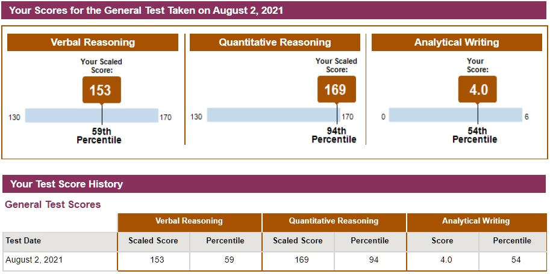
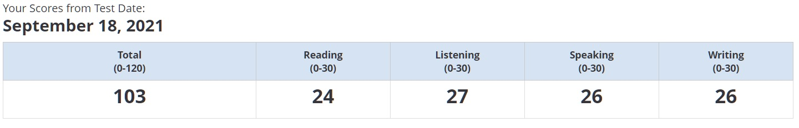
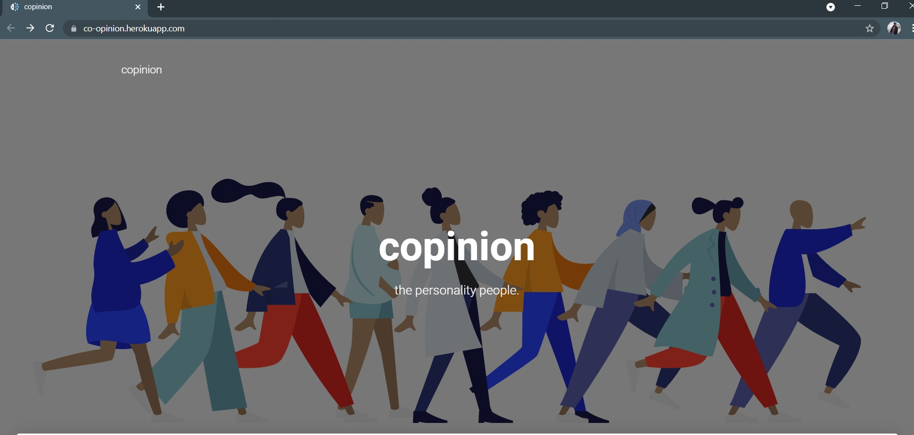
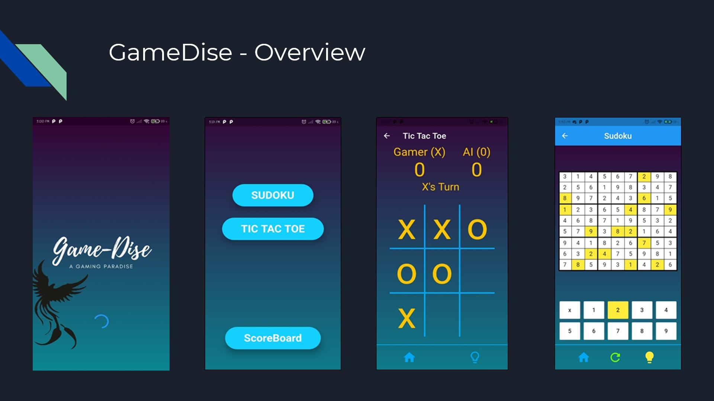
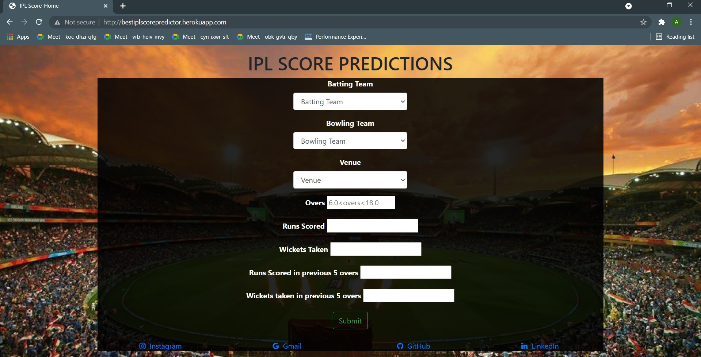
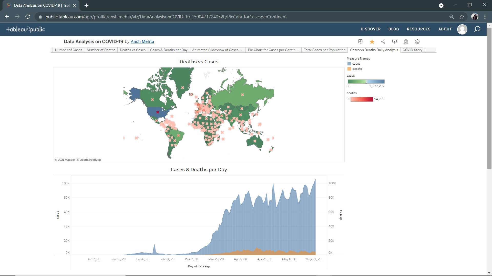
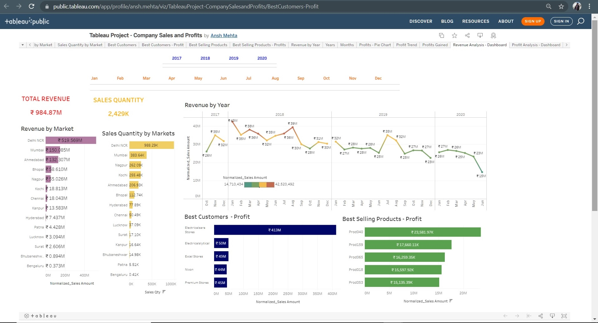
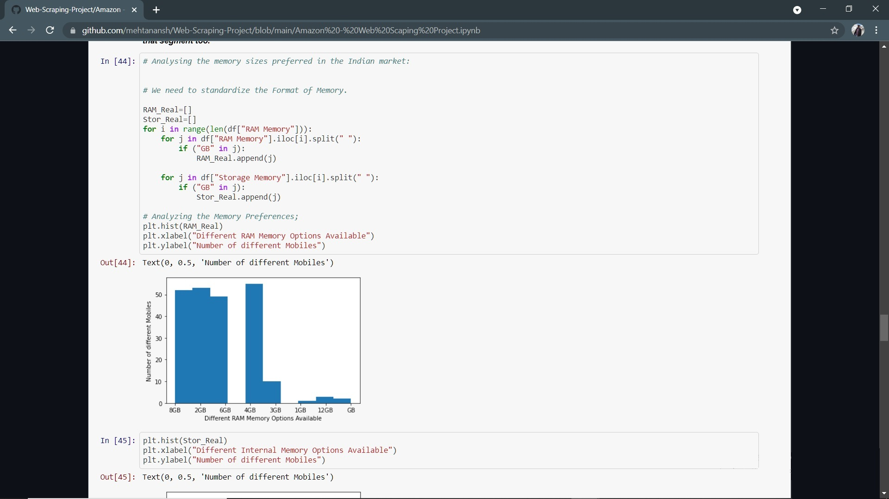
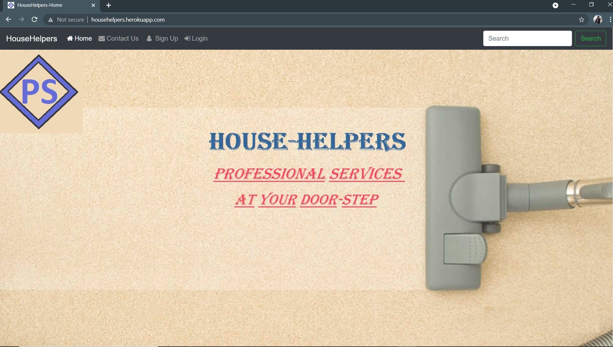

Academics
Master's of Computer Science
Fall (August) 2022 to Summer (May) 2024
GPA: 3.5 / 4
Coursework: Machine Learning, Fundamentals of Computer Networks, Probability and Statistics for Data Science, Visualization, Advance Project (under Prof. Ayush Kumar and Harvard Medical School), Data Science Fundamentals, Theory of Databases
B.Tech - Information Technology
August 2018 to May 2022

Cummulative GPA: 9.04 / 10
Coursework: Data Structures, Analysis of Algorithms, Programming in C, Operating Systems, Databases Management, Web Development, Artificial Intelligence, Exploratory Data Analysis, Cloud Computing, Natural Language Processing, Deep Learning, Machine Learning, Data Communication and Networking.
GRADUATE RECORD EXAMINATION (GRE)
TOTAL : 322. (QUANTITATIVE: 169, VERBAL: 153, ANALYTICAL WRITING ASSESSMENT: 4)

August 2nd, 2021
TEST OF ENGLISH AS A FOREIGN LANGUAGE (TOEFL)
TOTAL : 103. (READING: 24, LISTENING: 27, SPEAKING: 26, WRITING: 26)

September 18th, 2021
Junior College
August 2016 to May 2018
Maharashtra State Board of Secondary and Higher Secondary Education (MSBSHSE)
HSC (HIGHER SECONDARY CERTIFICATE)
12TH GRADE - FINAL EXAMINATIONS: 86.62 %
Schooling
August 2004 to May 2016
Maharashtra State Board of Secondary and Higher Secondary Education (MSBSHSE)
SSC (SECONDARY SCHOOL CERTIFICATE)
10TH GRADE - FINAL EXAMINATIONS: 93.00 %
Project

Led a Computer Vision based project in collaboration with Havard Medical School and Prof. Ayush Kumar, developing a mobile app that aids visually impaired people. Created a dataset of about 3000 images for 14 different brand logos. Trained and compared the performance of RetinaNet, MobileNet, and YoLov5 models on the dataset. Discovered that YoLov5 outperformed the other models with an Average Precision (mAP@0.5) of 77.8%, while the Retinanet model performed at 62.3% mAP and MobileNet at 48.6% mAP.
Designed and implemented an interactive Dashboard for visualizing and analyzing the house listings on AirBnb. It helped the users to streamline their house search by giving filtering options like house price, location, type of lease, house types, top hosts in the region, etc. Employed D3.js, HTML, and JS for the frontend, while the server was supported by Flask.
Video Demonstration for the same: Here (Youtube)

In my Undergrad's Final Year project, my team created a web portal that contains a Health Care Chatbot that aids users who need mental assistace. The portal will also have the functionality of disease prediction by taking into account the symptoms. Further, users would also be able to get Uses, Side-Effects and Alternatives for the medicines, which wuld be scraped using Python.

In my Semester 6 of Engineering, I implemented Gamedise, a flutter app, which allows users to play Sudoku and Tic Tac Toe with various features like vsPlayer, vsAI, Hints available and also solutions to problems. For backend, we used Dart, where Min-Max and Back Tracking algorithms were coded from scratch.

I participated in "The Data Science Platter", a course introduced by the Alumni Cell, where notable alumni taught us the basics of ML and Data Science. In the Project, I developed a Flask web-app that would be used for estimating First Innings Score in an IPL match taking into account the Venue, Previous Scores, Current condition of the game, etc. The model was implemented using Multiple Linear Regression.

During the intial phase of the Lockdown in India, I learnt Tableau and created my first project on Covid 19 Data Analysis. It comprises of various visualisations, A dashboard summarising the number of deaths and number of cases in different countries and a story depicting the number of cases from December to May in various parts of the world.

To enhance my skills and also learn how SQL can be used along with Tableau, I performed analysis on a company database which was connected through SQL in Tableau Desktop. I created a Revenue as well as Profits Dashboard which helps the viewer gain insights into the performance of the different products in different cities, analyse the current situation of the company, and take next steps accordingly.

Through Web Scraping using Beautiful Soup (Python), I created my own Database of mobiles sold in India (on Amazon), and performed Exploratory Data Analysis on the dataset. I also highlightes key problems with the dataset and why it is not reliable.

Developed a website, "HouseHelpers", which serves the purpose of door-to-door household services that are provided by helpers and professionals, which is coordinated online. I developed the project under the guidance of Prof. Garima Rawat, using Django, Python, Pillow, HTML, Bootstrap, etc. and got to learn about Database Designing & Management and Web Development.
With the help of Exam cell, I developed a C Program for calculating the SGPI / CGPI / YPI as a Project, that could be used by First Year Students for calculating their scores after declaration of results and also understand the whole process of calculation.
About

I am a MS - CS student studying at SUNY - Stony Brook, one of the premium colleges in USA. I aim to become a Data Scientist and have serious passion for programming, data visualisation, web scraping and web development. I am a well-organised person who is a meticulous observer, a fast learner and has dynamic though process. Being skilled in Python, R and C, I am an avid programmer with coding as one of my hobbies. I have experience using frameworks like Django, Angular JS, Flask, D3.js, PHP, Flutter, and have worked with databases like SQL and NoSQL (Mongo DB & Firebase).
Being born in Mumbai, I am a cricket fanatic, but also follow Football. My Hobbies also include solving sudokus, puzzles, crosswords, swimming, playing various outdoor games and exercising.
I am interested in getting the most out of data and working with positive people on ambitious projects.
Let's Make Something Special !